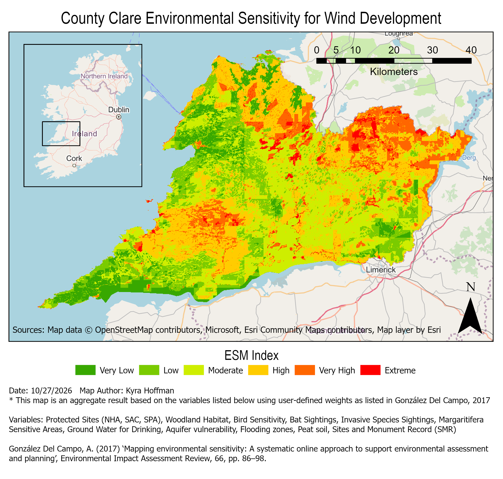

County Clare Environmental Sensitivity for Wind Development
In my master's program, I took a course called "Practical Environmental Assessment". This module focused on how SEA,
EIA, and AA assessment are incorporated into decision-making in the EU and Ireland specifically. Within the course, I completed an analysis
of the environmental sensitivity of County Clare for variables specific to wind system development.

Project Details / Background
The assignment was to write an EIA scoping report for a proposed wind development in County Clare.
To begin, I conducted this environmental sensitivity analysis using a weighted sum method to find the least sensitive
areas where a development would ideally go. This method and layer weights chosen were based on the paper “Mapping
environmental sensitivity: A systematic online approach to support environmental assessment and planning” by Ainhoa
González De Campo.
Data Sources
Archaeological Survey of Ireland. (2026). National Monuments Service Sites and Monuments Record (SMR) [Geodatabase Feature Class]. ArcGIS Online. https://www.arcgis.com/home/item.html?id=3fcf2b6232a54af5a6731cbd4e647c52#overview
Bat Conservation Ireland. (2011). Landscape Conservation for Irish Bats [Geodatabase Feature Class]. ArcGIS Online. https://www.arcgis.com/home/item.html?id=c77289d3f93b4c999cbbbfa9cd6d45e9#overview
BirdWatch Ireland. (2014). BirdWatch Ireland—Sensitivity for Wind Energy [Survey]. birdwatchireland.ie. https://www.arcgis.com/home/item.html?id=8e27c5d902914272965e25f2eb9d3441#overview
Environmental Protection Agency. (2017). Irish Soil Information System [Shapefile]. EPA GeoPortal. https://gis.epa.ie/GetData/Download
Environmental Protection Agency. (2026). WFD Register of Protected Areas—Groundwater Waterbodies for Drinking Water [Web Map Service]. data.gov.ie. https://data.gov.ie/dataset/wfd-register-of-protected-areas-groundwater-waterbodies-for-drinking-water
Geological Survey Ireland. (2021a). Bedrock Geology 1:100,000 Ireland (ROI) ITM [Shapefile]. data.gov.ie. https://data.gov.ie/dataset/bedrock-geology-1100000-ireland-roi-itm?package_type=dataset
Geological Survey Ireland. (2021b). Groundwater Vulnerability 1:40,000 Ireland (ROI) ITM [Shapefile]. data.gov.ie. https://data.gov.ie/dataset/groundwater-vulnerability-140000-ireland-roi-itm?package_type=dataset
Geological Survey Ireland. (2023). IE GSI Geoheritage Audited Sites Ireland (ROI) ITM [Geodatabase Feature Class]. ArcGIS Online. https://www.arcgis.com/home/item.html?id=35bb2b4ba2ca479ab7db513b445be7dc#overview
National Parks and Wildlife Service. (2008). National Survey of Native Woodlands [Geodatabase Feature Class]. ArcGIS Online. https://www.arcgis.com/home/item.html?id=584a7de47cba4e97979d55252313875a#overview
National Parks and Wildlife Service. (2017). Margaritifera Sensitive Areas 2017 (NPWS) [Geodatabase Feature Class]. ArcGIS Online. https://www.arcgis.com/home/item.html?id=6ddef2f95e82403cb291156b4ae6c5f6#overview
National Parks and Wildlife Service. (2025a). Natural Heritage Areas (NHAs), Ireland [Geodatabase Feature Class]. ArcGIS Online. https://www.arcgis.com/home/item.html?id=54d46d215fc84be9a5ad0f0195835a08#overview
National Parks and Wildlife Service. (2025b). Special Areas of Conservation (SACs), Ireland [Geodatabase Feature Class]. ArcGIS Online. https://www.arcgis.com/home/item.html?id=f2cb91bdd5654a5783a71da130e88065#overview
National Parks and Wildlife Service. (2025c). Special Protection Areas (SPAs), Ireland [Geodatabase Feature Class]. ArcGIS Online. https://www.arcgis.com/home/item.html?id=4692322867534e348bae9c0609d871d7#overview
Office of Public Works. (2021a). National Coastal Flood Extents—Current Scenario (Version 100 Year) [Shapefile]. data.gov.ie. https://data.gov.ie/dataset/national-coastal-flood-extents-2021-current-scenario
Office of Public Works. (2021b). NIFM River Flood Extents—Current Scenario (Version 100 Year) [Shapefile]. data.gov.ie. https://data.gov.ie/dataset/national-coastal-flood-extents-2021-current-scenario
The Heritage Council. (2026). Clare Invasive Species [Geodatabase Feature Class]. ArcGIS Online. https://www.arcgis.com/home/item.html?id=1246e6e7514243cfb2e3d28f21a6da0a#overview